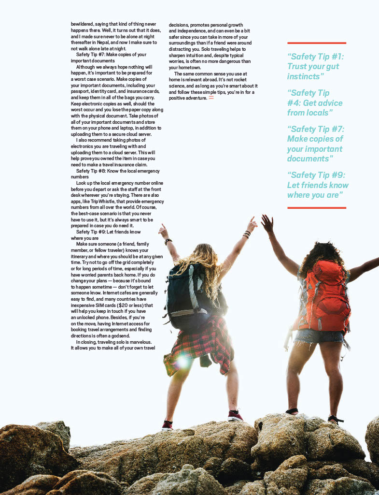
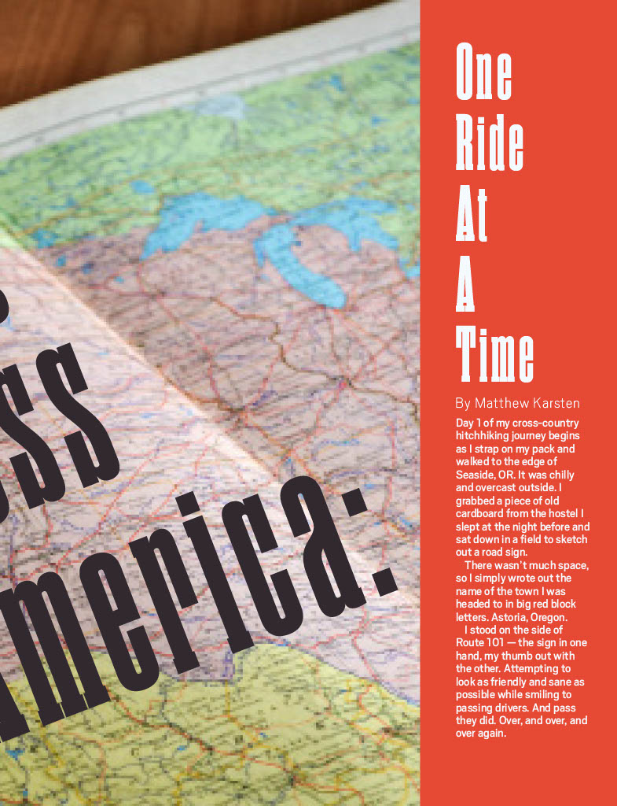
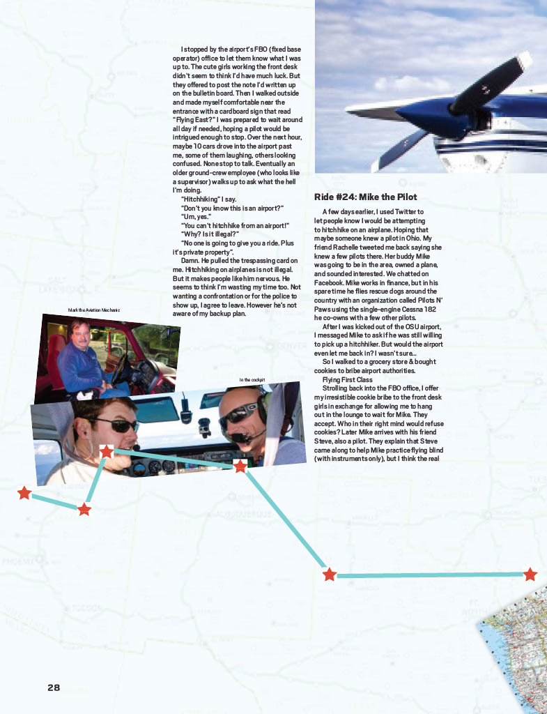
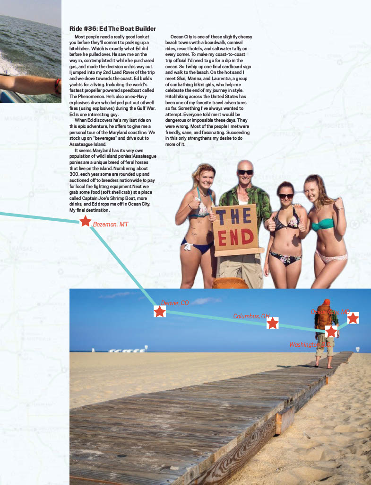
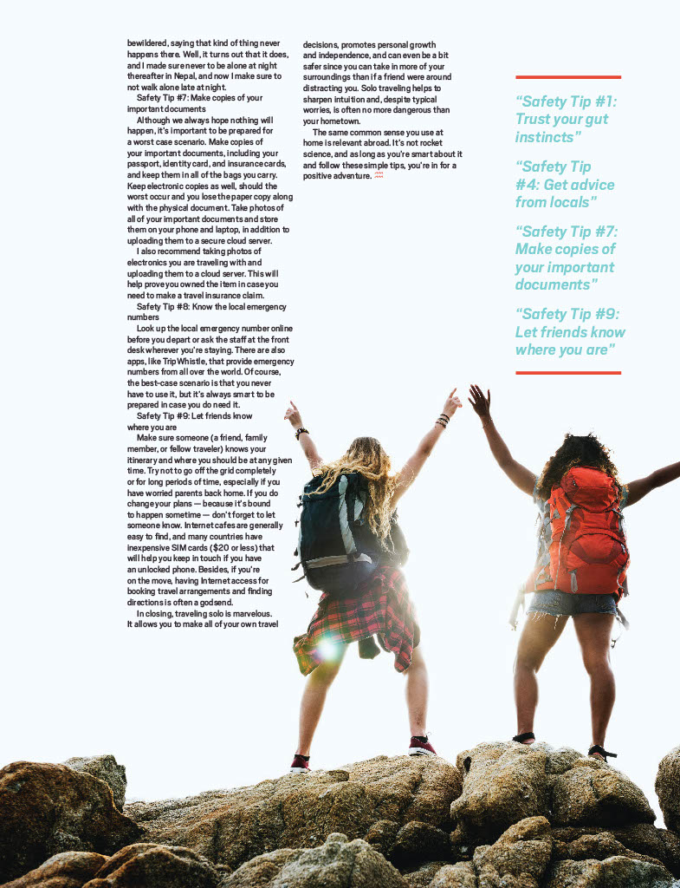
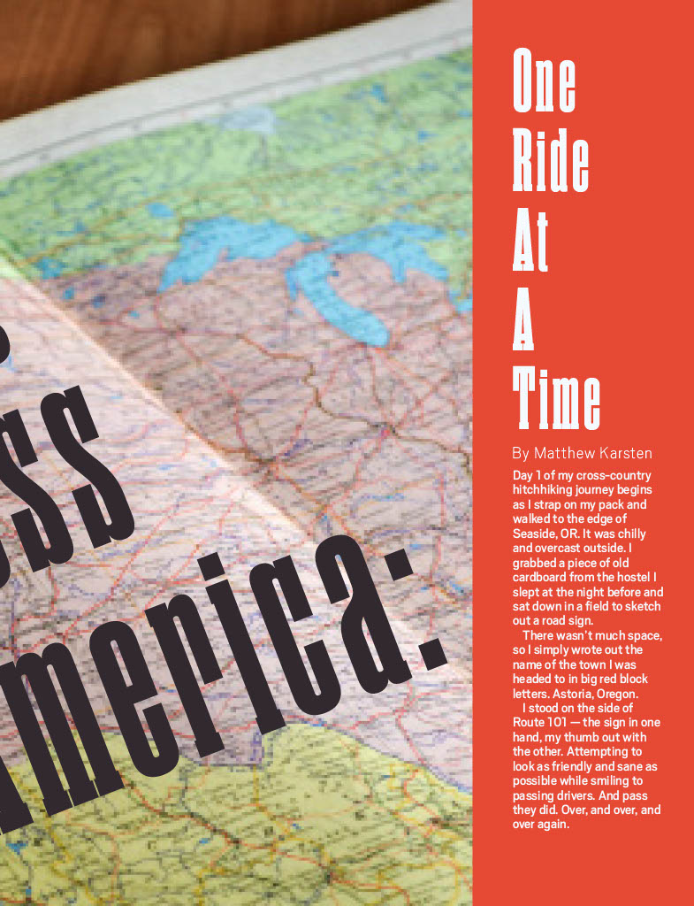
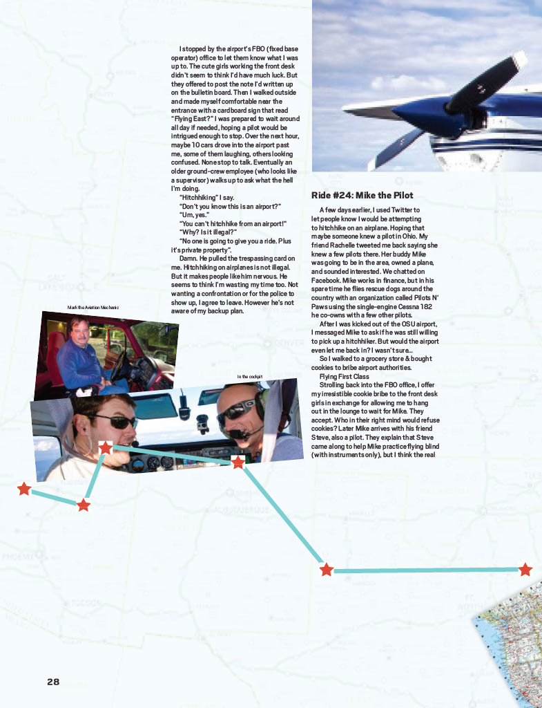
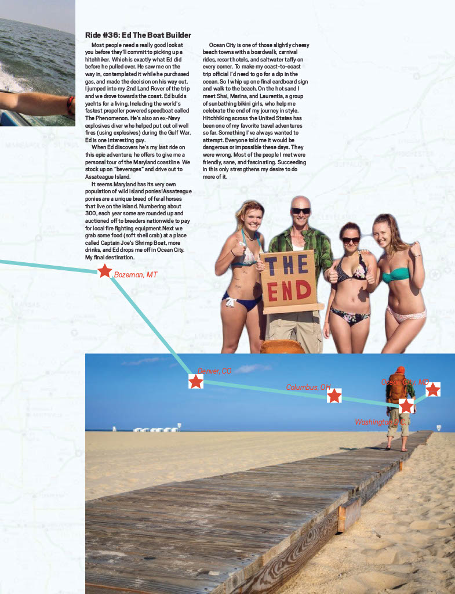
Hitchhiker Almanac was created as a magazine specifically for the adventurous, budget-conscious traveler. The Hitchhiker's Almanac is a resource for those who prefer to hit the open road and explore new places by hitchhiking.
Inside these pages, you'll find tips and tricks for safe and successful hitchhiking, as well as stories and advice from experienced hitchhikers. We've also included a range of budget travel options and resources, so you can stretch your funds as far as possible on your journey.
The design of the Hitchhiker's Almanac is meant to reflect the adventurous and budget-conscious spirit of the magazine's target audience. We used a bold and playful color scheme, with pops of bright orange and blue against a predominantly white backdrop.
The layout is clean and modern, with plenty of white space to allow the content to breathe. We used a mix of sans-serif and serif typefaces to add visual interest and hierarchy to the text.
We also included a range of custom graphics and illustrations throughout the magazine, depicting hitchhiking scenes and iconic travel imagery. These elements add a sense of fun and personality to the design, and help to break up the text-heavy content.
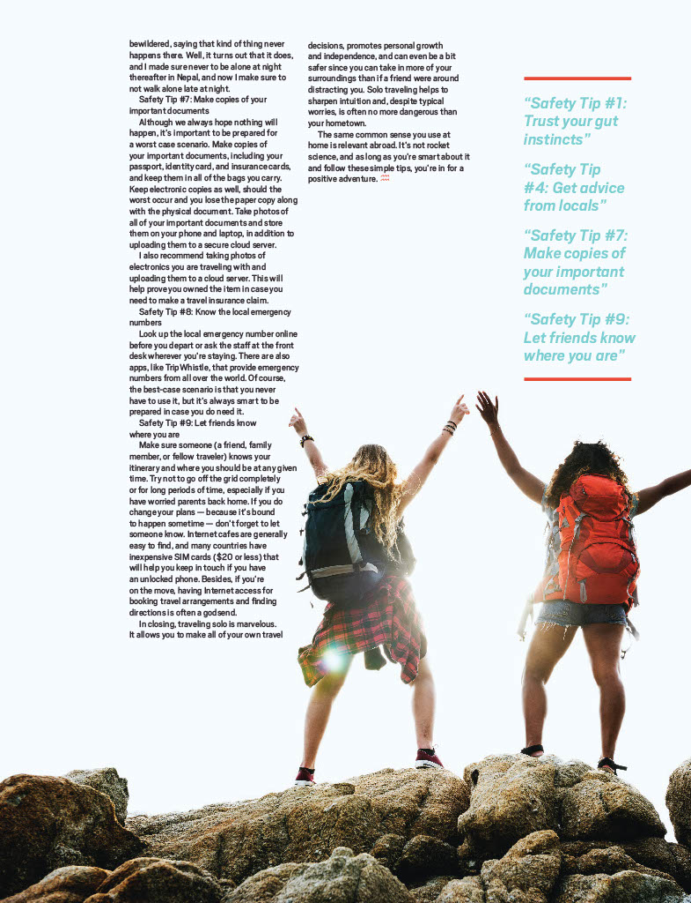
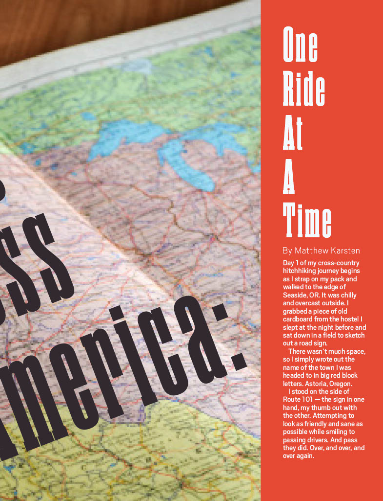
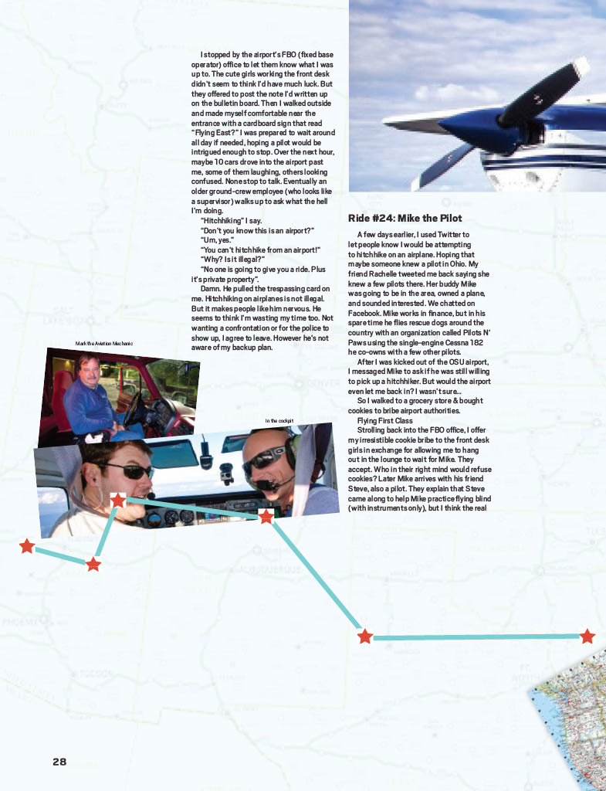
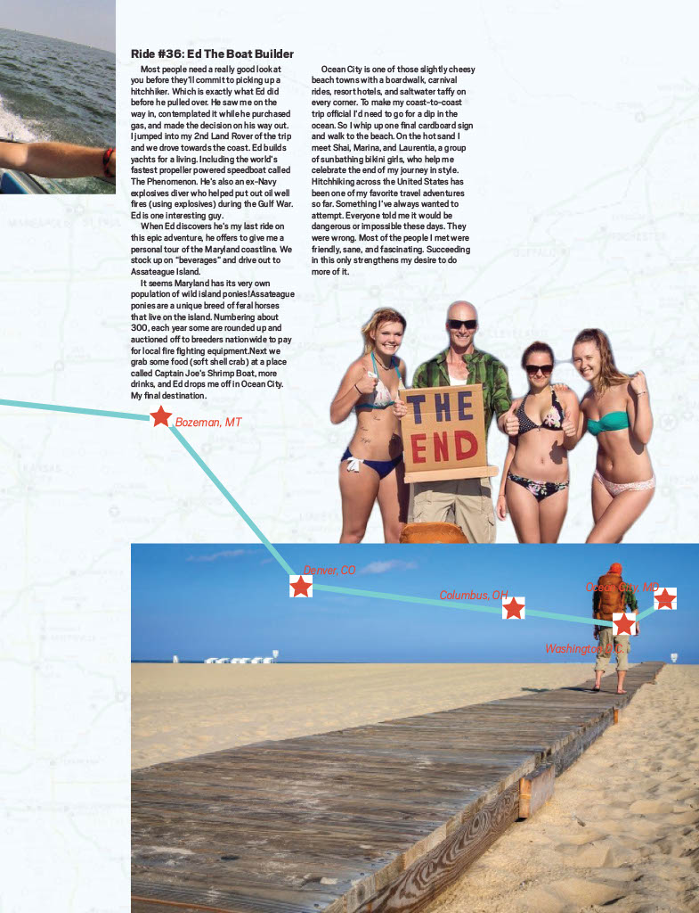